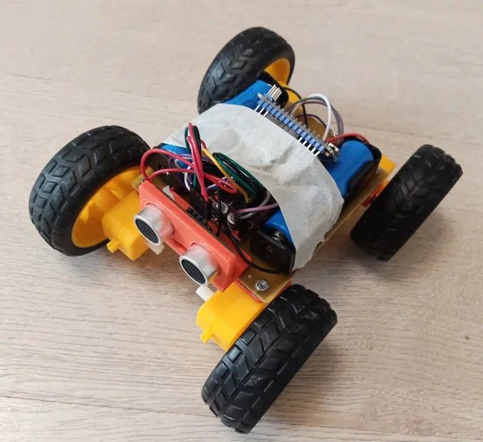
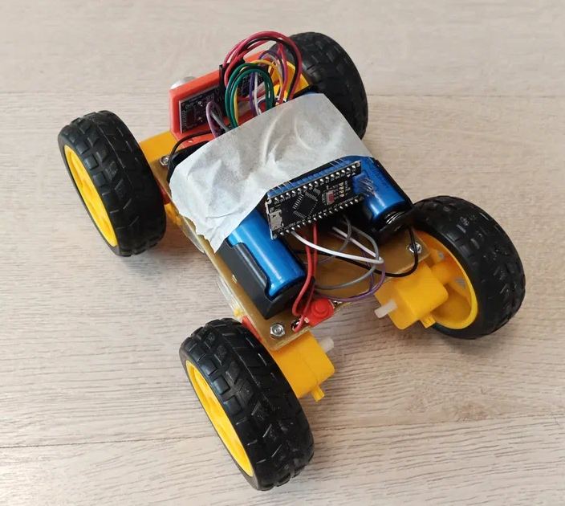

Фотографии ровера

Вид спереди

Вид сзади

Вид снизу
Начальная версия ровера с ультрозвуковым дальномером и простой прошивкой, которая подключает все модули и тестирует их базовые режимы
Ровер предназначен для повторения, изучения и дальнейшего творческого совершенствования
Этот 4-колесный робот прост в повторении, в основе конструкции микроконтроллер, драйвер моторов и ультразвуковой датчик. Ровер питается от двух аккумуляторов и может использоваться как платформа для различных робототехнических экспериментов.
Вид спереди
Вид сзади
Вид снизу
| Драйвер MX1508 | Двигатели |
|---|---|
| Выход A+ | Левый передний +, Левый задний + |
| Выход A- | Левый передний -, Левый задний - |
| Выход B+ | Правый передний +, Правый задний + |
| Выход B- | Правый передний -, Правый задний - |
| + | выключатель ( "+" аккумулятора) |
| - | "-" аккумулятора |
| Пин Arduino | Подключение |
|---|---|
| D2 | HC-SR04 Trig |
| D3 | HC-SR04 Echo |
| D4 | MX1508 IN1 |
| D5 | MX1508 IN2 |
| D6 | MX1508 IN3 |
| D7 | MX1508 IN4 |
| 5V | HC-SR04 VCC |
| GND | HC-SR04 GND |
| VIN | выключатель ( "+" аккумулятора) |
| GND (второй) | "-" аккумулятора |
// Пин для светодиода
#define LED_PIN 13
// Пины для ультразвукового датчика HC-SR04
#define TRIG_PIN 2 //D2
#define ECHO_PIN 3 //D3
// Пины для драйвера двигателей MX1508
// Левые двигатели (пара A)
#define LEFT_IN1 4 // IN1 на MX1508 (двигатель A)
#define LEFT_IN2 5 // IN2 на MX1508 (двигатель A)
// Правые двигатели (пара B)
#define RIGHT_IN3 6 // IN3 на MX1508 (двигатель B)
#define RIGHT_IN4 7 // IN4 на MX1508 (двигатель B)
// Время работы двигателей при тесте (мс)
#define MOTOR_TEST_TIME 1000
// Задержка между тестами (мс)
#define TEST_DELAY 500
void setup() {
// Инициализация светодиода
pinMode(LED_PIN, OUTPUT);
// Инициализация HC-SR04
pinMode(TRIG_PIN, OUTPUT);
pinMode(ECHO_PIN, INPUT);
// Инициализация пинов двигателей
pinMode(LEFT_IN1, OUTPUT);
pinMode(LEFT_IN2, OUTPUT);
pinMode(RIGHT_IN3, OUTPUT);
pinMode(RIGHT_IN4, OUTPUT);
// Остановка всех двигателей
stopAllMotors();
// Тест светодиода - 3 мигания
for (int i = 0; i < 3; i++) {
digitalWrite(LED_PIN, HIGH);
delay(200);
digitalWrite(LED_PIN, LOW);
delay(200);
}
delay(1000); // Пауза перед тестом двигателей
}
void loop() {
static bool motorsTested = false;
if (!motorsTested) {
// Тест левой пары двигателей (A)
testMotorPair("Левая пара", LEFT_IN1, LEFT_IN2);
delay(TEST_DELAY);
// Тест правой пары двигателей (B)
testMotorPair("Правая пара", RIGHT_IN3, RIGHT_IN4);
delay(TEST_DELAY);
// Специальный сигнал светодиодом - 2 раза по 2 коротких мигания
for (int i = 0; i < 2; i++) {
for (int j = 0; j < 2; j++) {
digitalWrite(LED_PIN, HIGH);
delay(100);
digitalWrite(LED_PIN, LOW);
delay(100);
}
delay(200);
}
delay(1000);
motorsTested = true;
}
// Тест равномерного мигания и сонара
testSonarWithLED();
}
void testMotorPair(const String &pairName, int in1, int in2) {
// Вращение вперед
digitalWrite(in1, HIGH);
digitalWrite(in2, LOW);
delay(MOTOR_TEST_TIME);
// Вращение назад
digitalWrite(in1, LOW);
digitalWrite(in2, HIGH);
delay(MOTOR_TEST_TIME);
// Остановка
digitalWrite(in1, LOW);
digitalWrite(in2, LOW);
}
void stopAllMotors() {
digitalWrite(LEFT_IN1, LOW);
digitalWrite(LEFT_IN2, LOW);
digitalWrite(RIGHT_IN3, LOW);
digitalWrite(RIGHT_IN4, LOW);
}
float getDistance() {
// Отправка импульса
digitalWrite(TRIG_PIN, LOW);
delayMicroseconds(2);
digitalWrite(TRIG_PIN, HIGH);
delayMicroseconds(10);
digitalWrite(TRIG_PIN, LOW);
// Измерение длительности импульса
long duration = pulseIn(ECHO_PIN, HIGH);
// Расчет расстояния в см
return duration * 0.034 / 2;
}
void testSonarWithLED() {
float distance = getDistance();
// Частота мигания зависит от расстояния
int blinkDelay;
if (distance < 10) { // Очень близко - быстрое мигание
blinkDelay = 100;
} else if (distance < 30) { // Близко - среднее мигание
blinkDelay = 200;
} else if (distance < 50) { // Далеко - медленное мигание
blinkDelay = 400;
} else { // Очень далеко - очень медленное мигание
blinkDelay = 800;
}
// Мигание светодиодом
digitalWrite(LED_PIN, HIGH);
delay(blinkDelay);
digitalWrite(LED_PIN, LOW);
delay(blinkDelay);
}
Вопросы можно направлять по адресу admxp@yandex.ru